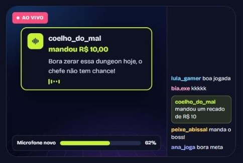

Recadin
Quem assiste manda um Pix e o recado aparece no OBS da live: lido por voz de IA, com som, vídeo ou a música pedida. O dinheiro cai direto na conta do Mercado Pago do streamer. Inclui metas, personalização do visual e fila de moderação para aprovar, pular ou recusar cada recado.
Em beta fechado para streamers da Twitch: o acesso é pedido com a conta da Twitch.